ENISA Single Reporting Platform – Manufacturer Guide
Reporting actively exploited vulnerabilities (AEV) and severe incidents through the central reporting platform. This guide walks through all four phases, from registration to the final report, showing the required data fields for each step.
Status: 19 June 2026 · Test portal, fields not yet finalRegistration
Early Warning
72h Notification
Final Report
Registration
One-off, in advanceRequired data
| Field | Status | Note |
|---|---|---|
| Personal data | ||
| Email address (EU Login) | Mandatory | Personal EU Login account |
| First name | Mandatory | |
| Last name | Mandatory | |
| Country (CSIRT) | Mandatory | For DE: CSIRT Germany |
| Address | Mandatory | |
| Email address (contact) | Mandatory | Need not match the EU Login address |
| Phone number | Mandatory | |
| Manufacturer data | ||
| Manufacturer name | Mandatory | Currently a free-text field |
| Manufacturer CSIRT (Member State) | Mandatory | Determines the responsible national CSIRT |
| Sector | Optional | |
| Registration number | Optional | Meaning still unclear; possibly VAT ID for DE |
| Address (manufacturer) | Optional | |
Procedure
- Open the portal. Test environment at portal.test-cra-srp.enisa.europa.eu, live environment at crasrp.eu. Portal language is English.
- Select user type. As a manufacturer, choose the option “Assigned Representative”.
- Select the national entry point. Set the responsible CSIRT – for a German company, “CSIRT Germany”.
- Sign in via EU Login. The personal account is later linked to the company as an “Authorized Representative”.
- Enter personal data (registration step 1).
- Link to manufacturer (step 2). Currently free-text fields; up to two persons per company. The association is provisional and forwarded to the responsible national CSIRT.
- Choice of the correct CSIRT is the manufacturer’s responsibility. The portal does not verify this. The selected CSIRT is notified first for future reports.
- Validation by the CSIRT. The CSIRT verifies the person-to-manufacturer association (method is open, e.g. by phone or email). The BSI’s preferred process is not yet known to VDMA but has been requested. The status is visible in the user settings.
- Ability to report. Successful submission of a report does not depend on successful validation of the account.
- Dashboard. After registration, the national CSIRT dashboard appears (identifiable by the flag in the top right).
- Multiple countries. The same account can be assigned to manufacturers in other EU Member States by choosing a different national entry point (example: Greece). Validation is then performed by the CSIRT of that country.
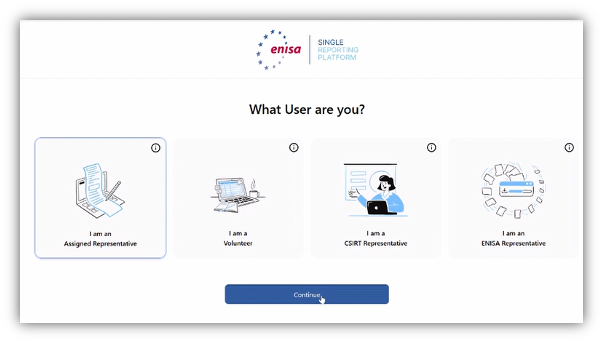
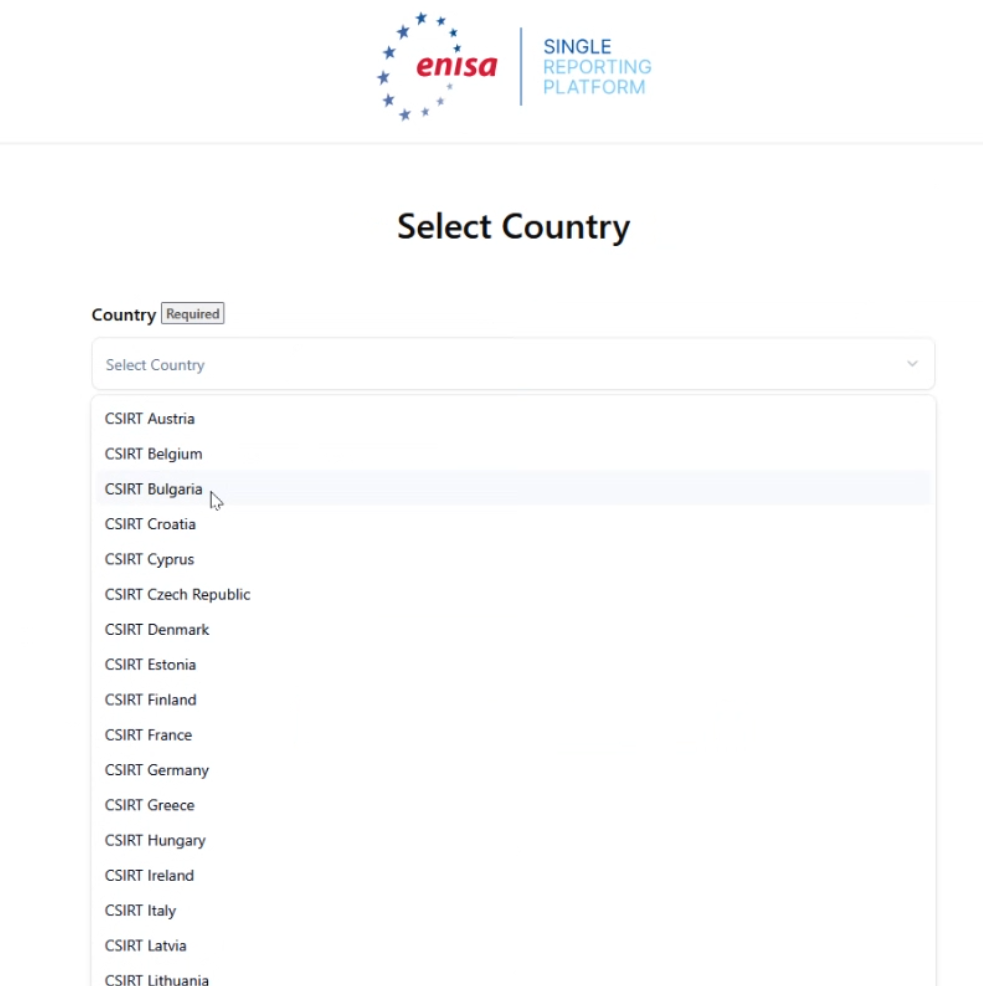
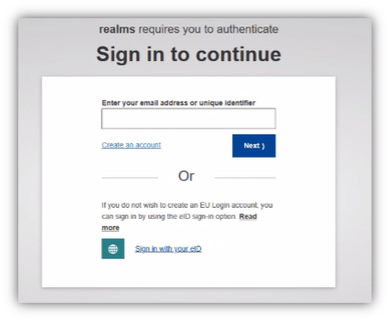
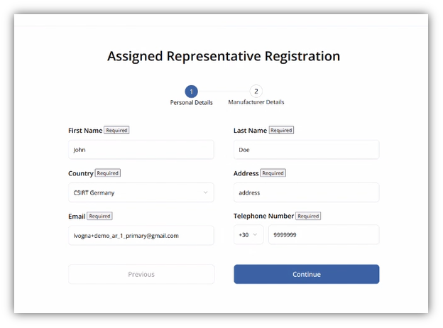
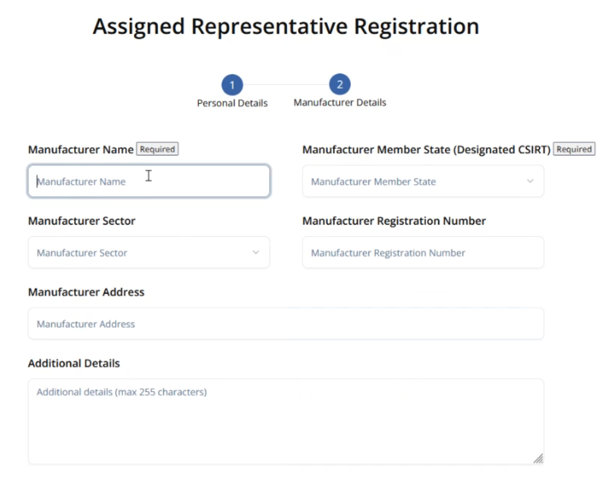
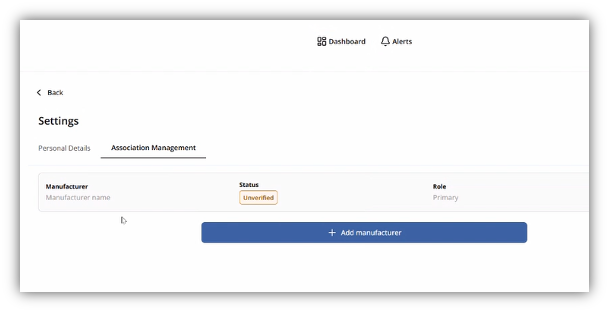
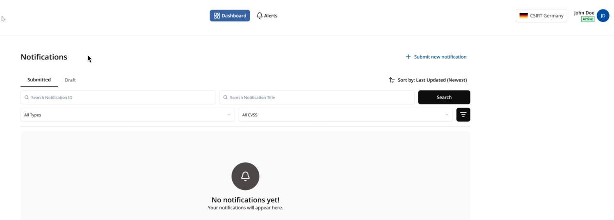

Early Warning
Deadline: within 24 h of becoming awareRequired data
| Field | Status | Note |
|---|---|---|
| Notification type (Incident / Vulnerability) | Mandatory | Shows the matching fields for the chosen type |
| Title | Mandatory | |
| Summary | Mandatory | |
| Manufacturer | Mandatory | Additional manufacturers can be added |
| Member States where product is available | Conditional | Determines which further CSIRTs are notified; mandatory if known |
| Incident suspected of unlawful or malicious acts (Incident only) | Mandatory | Yes/No flag for incident-type notifications |
| CVSS Score | Optional | |
| Affected product (PwDE) | Optional | Multiple products per notification possible |
| Product version | Optional | |
| Further affected products | Optional | “Add another PwDE” |
| CVE ID / EUVD ID | Optional | If already assigned |
Procedure
- Select notification type. Depending on the choice (Incident or Vulnerability), the matching fields are shown.
- Multiple products. If one vulnerability affects several products or versions, they can be captured in a single notification.
- Select countries of distribution carefully. This selection determines which additional national CSIRTs are notified.
- Save draft. Notifications can be saved as drafts.
- Submit. After “Submit”, the notification and its status are shown on the dashboard; the national CSIRT receives the Early Warning for review and, where applicable, release.
- Editable. After submission, notifications can be adjusted at any time within their current status; the system records all changes.
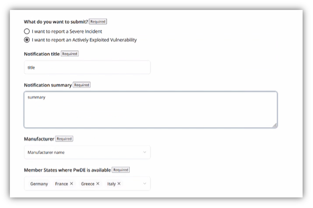
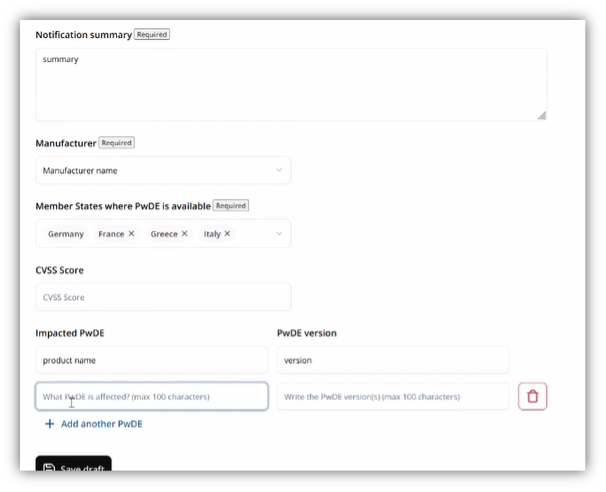
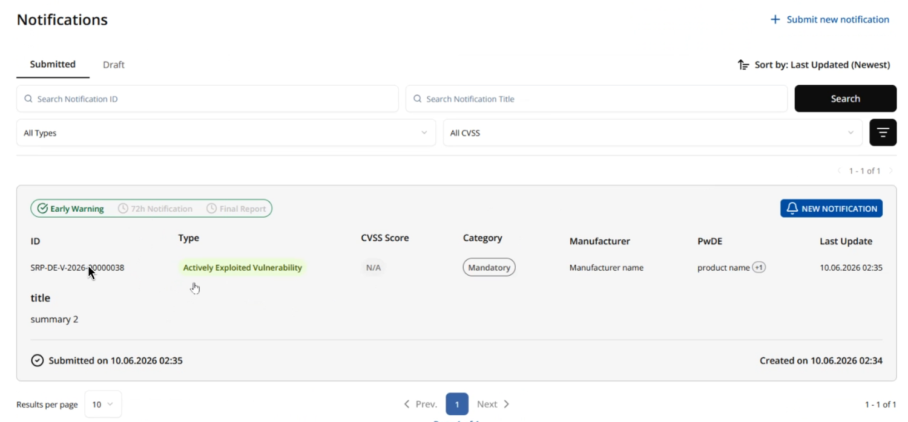
72h Notification
Deadline: within 72 h of becoming awareRequired data
| Field | Status | Note |
|---|---|---|
| General nature of the vulnerability (AEV) / nature of the incident | Mandatory | |
| General nature of the exploit (vulnerability) | Mandatory | |
| Corrective or mitigating measures taken | Mandatory | Additional measures can be added |
| Corrective or mitigating measures that users can take | Mandatory | |
| Date and time the incident was detected / occurred (incident) | Mandatory | Incident only |
| Initial assessment of the incident | Mandatory | Incident only |
| Date when corrective measure has been available | Conditional | Mandatory if available; may not yet be known at 72 h |
| Considered sensitivity of information | Conditional | Mandatory if such information available |
| Circumstances for non-dissemination (PEC) | Optional | Selection list, see below |
| Further relevant information | Optional |
Procedure
- Continue the notification. The 72-hour notification is added in the same way as the Early Warning.
- Non-dissemination (optional). The manufacturer can state reasons against forwarding to other national CSIRTs (Particularly Exceptional Circumstances, PEC).
- CSIRT review. If reasons are given, the national CSIRT reviews dissemination and may withhold the notification. The legal basis is Delegated Regulation (EU) C(2025) 8407 of 11 December 2025.
- Partial information to ENISA. Where the manufacturer marks at least one of the conditions of Article 16(2)(a)–(c) CRA, ENISA only receives partial information until the receiving CSIRT discloses the full notification.
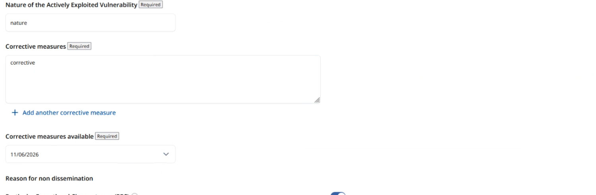
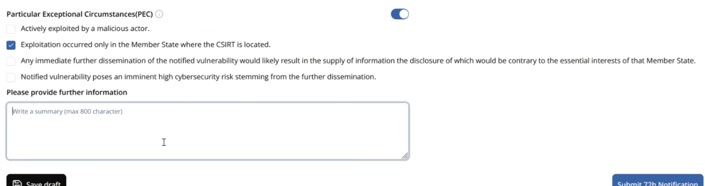
Final Report
Deadline: 14 days (vulnerability) / 1 month (incident)Required data
| Field | Status | Note |
|---|---|---|
| Detailed description (incl. severity and impact) | Mandatory | Full description of the vulnerability or incident |
| Date when corrective measure has been available | Mandatory | Vulnerability: triggers the 14-day deadline |
| Details about the security update / corrective measures | Mandatory | Vulnerability |
| Type of threat or root cause (incident) | Mandatory | Incident |
| Applied and ongoing mitigation measures | Mandatory | Incident |
| Malicious actor (AEV) | Conditional | Mandatory if such information is available |
| Additional notes | Optional | Exchange channel with the national CSIRT |
Procedure
- Complete the remaining fields and submit within 14 days (vulnerability) or one month (incident).
- Additional notes serve as an exchange channel with the national CSIRT.
- Closing. Once the Final Report is submitted, the notification is closed; subsequent changes are no longer possible (confirmation dialog “Are you sure?”).

ENISA FAQ on the CRA SRP
Source: ENISA · June 2026Condensed Q&A based on ENISA’s official FAQ document on the Single Reporting Platform. The original references CRA Articles 14–17 and Delegated Regulation C(2025) 8407.
What is the CRA Single Reporting Platform (SRP)?
A centralized electronic system that simplifies reporting obligations for manufacturers and open-source software stewards under the Cyber Resilience Act. It is a “single entry point” that lets manufacturers report actively exploited vulnerabilities and severe incidents once, instead of notifying multiple national authorities separately.
Submissions are routed simultaneously to the CSIRT designated as coordinator (based on the manufacturer’s main establishment, see CRA Article 14(7)) and to ENISA. The CSIRT then disseminates the information to other relevant CSIRTs in Member States where the product is available, and to market surveillance authorities as needed.
What is the legal basis?
The Cyber Resilience Act, in particular Article 16(1): a single reporting platform is established by ENISA, which manages and maintains its day-to-day operations. CRA Articles 14–17 set out the reporting ecosystem.
In December 2025 the European Commission published a Delegated Regulation (C(2025) 8407) specifying the conditions for delaying dissemination of notifications.
Who runs the platform?
ENISA establishes, manages and maintains the day-to-day operations of the CRA SRP and ensures its security through appropriate technical and organizational measures.
When will the platform be operational?
Scheduled to be operational by 11 September 2026, the date the mandatory reporting obligations enter into application (CRA Article 14). A testing period precedes this date.
What must be reported?
Two types of occurrences:
- Actively Exploited Vulnerabilities (AEV) – vulnerabilities for which there is reliable evidence of exploitation by a malicious actor.
- Severe Incidents – incidents with severe impact on the security of the product with digital elements (severity criteria in CRA Article 14(5)).
Open-source software stewards are subject to the obligation under CRA Article 24(3).
What else can be reported (voluntary)?
The platform will also offer voluntary reporting under Article 15 CRA. This functionality is foreseen to become available with the CRA application date on 11 December 2027. Any natural or legal person may then notify on a voluntary basis:
- Vulnerabilities contained in a product with digital elements
- Cyber threats that could affect the risk profile of a product
- Incidents having an impact on the security of a product
- Near misses that could have resulted in an incident
What are the reporting deadlines?
The clock starts the moment the manufacturer becomes aware of the active exploitation or the incident.
- Early Warning: without undue delay, in any case within 24 hours.
- Vulnerability / Incident Notification: within 72 hours, with general information and an initial assessment.
- Final Report: for vulnerabilities – no later than 14 days after a corrective measure is available; for severe incidents – within 1 month of the initial notification.
How does the platform operate?
Manufacturers submit notifications electronically. The platform routes them simultaneously to the designated CSIRT coordinator and to ENISA. The CSIRT disseminates the information without delay to other relevant CSIRTs and to market surveillance authorities as needed. For sensitive reports, dissemination may be delayed on security grounds.
How will the platform be accessible and how will registration work?
Specific manuals and instructions will be provided by ENISA in the course of June 2026. Materials supporting training and dry-run exercises will also be available within that timeframe. No Application Programming Interfaces (APIs) will be provided at the initial stage; organizations may integrate reporting requirements into their systems, but submissions must be made manually through the platform.
How is the term “actively exploited vulnerability” interpreted?
See subsection 5.1 of the European Commission’s “FAQs on the CRA Implementation”: How can a manufacturer become aware of an actively exploited vulnerability or a severe incident? The Commission’s draft guidance (section 9.1) provides further explanations on when a manufacturer is regarded as having become aware.
Do I have to report vulnerabilities in products placed on the market before the CRA applies?
See subsection 5.3 of the Commission’s “FAQs on the CRA Implementation”.
Do I have to report vulnerabilities that were actively exploited before the CRA applies?
The obligation applies once the manufacturer becomes aware of them under the CRA. It does not extend to vulnerabilities whose active exploitation the manufacturer was already aware of before the reporting obligation applied.
If the vulnerability is in a third-party component, am I still obliged to notify?
See section 5.4 of the Commission’s FAQ – If an actively exploited vulnerability is contained in a third-party component, are all manufacturers integrating that component required to notify it?
Can the notification workflow be automated (API)?
Organizations may automate reporting workflows and integrate the requirements into their systems. No APIs will be provided at this stage.
What are the data fields in the reporting template?
The ENISA FAQ lists common, vulnerability-specific, and incident-specific fields per stage (24h / 72h / Final), classified as:
- A – automated (not visible to submitter)
- X – obligatory
- C – copied from previous step by default, or updated
- O – optional
- I – obligatory if such information is available
Common fields: notification type, notification level, reporting times, reporter, manufacturer/steward name, product, product type, product category, Member States where product is available, title. Vulnerability fields: CVE ID, EUVD ID, general nature, exploit nature, corrective measures, sensitivity, availability date, full description, severity, impact, malicious actor, security update details. Incident fields: suspected malicious acts, nature, detection/occurrence date and time, initial assessment, corrective measures, sensitivity, severity, impact, root cause, ongoing mitigations.
Will training be provided?
Yes. Materials supporting training and dry-run exercises will be available in June 2026.
How do I know which national CSIRT to report to?
Determined by your main location of establishment (or that of your authorised representative, if you are not established in the EU). CRA Article 14(7) provides the detailed rules. ENISA will publish the list of national CSIRTs designated as coordinators at a later stage.
Who is responsible for what?
- Manufacturers: submit timely notifications and comply with other CRA obligations.
- Open-source software stewards: submit timely notifications under Article 24(3).
- ENISA: manages the platform, processes reports, prepares biennial trend reports, operates a helpdesk (especially for SMEs), and discloses fixed vulnerabilities to the European Vulnerability Database.
- CSIRTs designated as coordinators: receive and assess reports, decide on dissemination delays, inform market surveillance authorities and the public if necessary, and provide helpdesk support alongside ENISA.
- European Commission: adopts delegated and implementing acts, evaluates platform effectiveness, supports coordination of enforcement.
- Market surveillance authorities: receive disseminated information and enforce compliance.
Who receives the reports?
As a general rule, on submission a report is notified simultaneously to:
- The CSIRT designated as coordinator in the Member State where the manufacturer is established.
- ENISA (unless particularly exceptional circumstances apply).
The receiving CSIRT then disseminates it without delay to other relevant CSIRTs across the EU via the platform.
Can dissemination of a report be delayed or withheld?
Yes. In particularly exceptional circumstances, the receiving CSIRT may delay or withhold dissemination – strictly limited to cases justified on security grounds (e.g. where spreading the information would pose an even greater security risk).
Delegated Regulation C(2025) 8407 of 11 December 2025 further specifies the conditions. If the manufacturer marks at least one of the conditions in Article 16(2)(a)–(c) CRA in the 72-hour notification, ENISA only receives partial information until the receiving CSIRT discloses the full notification.
How is the platform secured?
ENISA must take appropriate measures to manage risks to the platform’s security and notify the CSIRTs Network and the Commission of any security incidents affecting the platform itself. Before launch, the platform undergoes user and security testing and is periodically re-checked.
How is the CSIRTs Network involved?
Under CRA Article 16, ENISA engages the CSIRTs Network in the development and future testing of the CRA SRP.